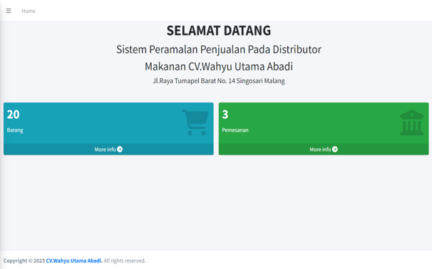

Sistem peramalan penjualan untuk distributor makanan ringan adalah suatu pendekatan atau metode untuk memprediksi jumlah produk yang akan terjual di masa depan. Tujuan utama dari sistem ini adalah membantu distributor dalam mengelola persediaan secara lebih efisien, mengurangi risiko persediaan yang berlebihan atau tidak mencukupi, serta secara keseluruhan meningkatkan kinerja rantai pasok.
Sistem peramalan penjualan membantu distributor menentukan jumlah optimal barang yang akan disimpan di gudang. Dengan memperkirakan permintaan di masa depan, distributor dapat menghindari kelebihan persediaan yang dapat menyebabkan kerugian akibat penurunan harga atau kedaluwarsa barang. Sebaliknya, ini juga dapat mencegah kekurangan persediaan yang dapat mengakibatkan kehilangan pelanggan dan melewatkan peluang penjualan.
Peran saya dalam proyek ini adalah sebagai berikut:
1.Membuat Database menggunakan MySQL.
2.Mengembangkan Sistem Peramalan Penjualan menggunakan Framework Laravel.
3.Mendesain Dashboard menggunakan Framework Bootstrap.
4.Mengimplementasikan sistem Login menggunakan Framework Laravel dan Bootstrap.
5.Secara otomatis menerapkan Metode Single Exponential Smoothing untuk Peramalan
6.Penjualan menggunakan Framework Laravel.
7.Secara otomatis menghasilkan Perhitungan Rekap Penjualan untuk Setiap Produk per